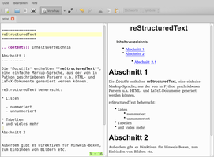
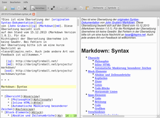

ReText
Dieser Artikel wurde für die folgenden Ubuntu-Versionen getestet:
Ubuntu 16.04 Xenial Xerus
Ubuntu 14.04 Trusty Tahr
Zum Verständnis dieses Artikels sind folgende Seiten hilfreich:
Ein Terminal öffnen, optional
Root-Rechte erlangen, optional
ReText  ist ein Editor für die vereinfachten Auszeichnungssprachen MarkDown bzw. dessen Dialekt Python-Markdown , reStructuredText (reST) und Textile. Es verwendet zwei Fenster: eines für den Quelltext und ein zweites ausblendbares rechts daneben als spezielle Live-Vorschau. Alternativ kann zwischen Quelltext- und einem normalen Vorschau-Fenster gewechselt werden. Damit ist das Programm ein sehr nützliches Werkzeug zum Erlernen der genannten Auszeichnungssprachen.
ist ein Editor für die vereinfachten Auszeichnungssprachen MarkDown bzw. dessen Dialekt Python-Markdown , reStructuredText (reST) und Textile. Es verwendet zwei Fenster: eines für den Quelltext und ein zweites ausblendbares rechts daneben als spezielle Live-Vorschau. Alternativ kann zwischen Quelltext- und einem normalen Vorschau-Fenster gewechselt werden. Damit ist das Programm ein sehr nützliches Werkzeug zum Erlernen der genannten Auszeichnungssprachen.
Das Python-Programm verwendet die Bibliothek Qt für die grafische Oberfläche (GUI).
Installation¶

ReText ist Bestandteil der offiziellen Paketquellen. Folgendes Paket muss installiert werden [1]:
retext (universe)
 mit apturl
mit apturl
Paketliste zum Kopieren:
sudo apt-get install retext
sudo aptitude install retext
Manuell¶
Hinweis!
Fremdsoftware kann das System gefährden.
Um die jeweils aktuellste Version zu nutzen, kann alternativ eine manuelle Installation via pip erfolgen. Voraussetzung ist neben Python in der Version 3.2 oder höher das folgende Paket:
python3-pyqt5 (universe)
mit apturl
Paketliste zum Kopieren:
sudo apt-get install python3-pyqt5
sudo aptitude install python3-pyqt5
Dann installiert man das Programm durch folgenden Befehl [2]:
pip3 install ReText
Soll das Programm systemweit installiert werden, muss pip mit Root-Rechten [3] ausgeführt werden. Soll eine manuelle Installation später wieder entfernt werden, nutzt man den Befehl (ggfs. ebenfalls mit Root-Rechten):
pip3 uninstall ReText
Verwendung¶
|  |
| Live-Vorschau reStructuredText |
|  |
| Live-Vorschau Markdown |
Bei Ubuntu-Varianten mit einem Anwendungsmenü befindet sich ein Programmstarter unter „Büro -> ReText“ [4]. Alternativ kann man den Befehl retext bzw. ~/.local/bin/retext (nur bei manueller Installation) verwenden.
Neben der Grundfunktionen eines Editors stehen folgende weitere zur Verfügung (Auswahl):
Tabellen
Bilder einbinden
Mathematische Formeln
Externe Links
Rechtschreibprüfung
Druckvorschau
Export¶
Von Haus aus unterstützt ReText den Export nach:
HTML
LibreOffice Writer (.odt)
Je nach Auszeichnungssprache können Werkzeuge wie Pandoc oder die Docutils zur Umwandlung in andere Formate eingesetzt werden. Wie man diese Werkzeuge in ReText einbindet, ist der Anleitung Export Extensions zu entnehmen.
Möchte man beispielsweise eine Umwandlung von Markdown nach RTF mittels Pandoc vornehmen, erstellt man die Datei ~/.local/share/retext/export-extensions/md2rtf.desktop:
[Desktop Entry] Name=Export Markdown to RTF Name[de]=Markdown in RTF umwandeln Exec=/usr/bin/pandoc -f markdown -t rtf -o %of %if X-ReText-FileFilter=RTF Files (*.rtf) X-ReText-DefaultExtension=.rtf
Der neue Konverter ist anschließend im Menü unter „Datei -> Export“ zu finden.
Einstellungen¶
Die Programmeinstellungen sind über „Bearbeiten -> Einstellungen“ erreichbar. Dazu zählt beispielsweise ein automatisches Speichern oder die Verwendung bestimmter Markdown-Funktionen. Gespeichert wird die Konfiguration in der Datei ~/.config/ReText project/ReText.conf (Leerzeichen im Pfad und Groß-/Kleinschreibung beachten!).
Problembehebung¶
Alternativen¶
Obwohl ReText einfach aus den offiziellen Paketquellen installierbar ist, ist er nicht der einzige Editor für Markdown. Mögliche Alternativen sind:
Siehe auch 14 Best Markdown Editors for Linux - Blogbeitrag, 10/2016
Links¶
ReText
auf SourceForge (veraltet)
Ohne Umwege – Retext hilft beim Editieren von Markdown-Dokumenten
 - LinuxUser, 03/2014
- LinuxUser, 03/2014Markdown-Editor ReText mit Live-Vorschau
- Blogbeitrag, 10/2012ReText – exzellenter Editor für Markdown unter Ubuntu
- Blogbeitrag, 11/2011rst2pdf und rst2pdf
- aus reStructuredText eine PDF-Datei erzeugenEditoren
 Programmübersicht
Programmübersicht
- Erstellt mit Inyoka
-
 2004 – 2017 ubuntuusers.de • Einige Rechte vorbehalten
2004 – 2017 ubuntuusers.de • Einige Rechte vorbehalten
Lizenz • Kontakt • Datenschutz • Impressum • Serverstatus -
Serverhousing gespendet von